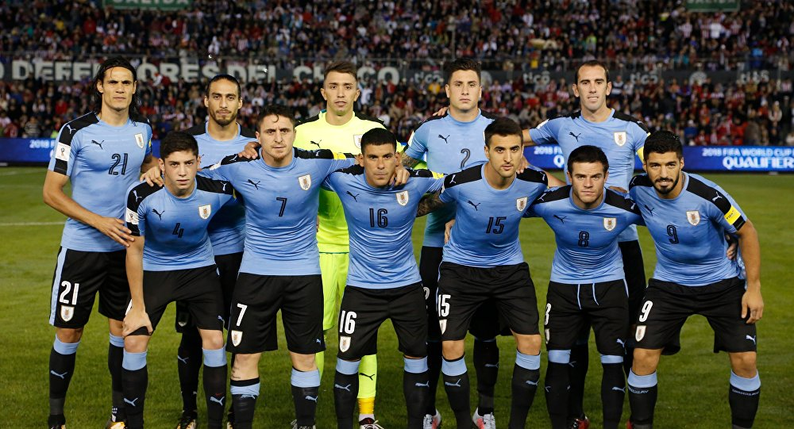

| Delanteros Actuales | Defensas Actuales | Jugadores retirados |
|---|---|---|
| Luis Suárez | Diego Godín | Diego Forlán |
| Edinson Cavani | Josema Giménez | Diego Lugano |
La selección de fútbol de Uruguay es el equipo representativo del país en las competiciones oficiales. La organización está a cargo de la Asociación Uruguaya de Fútbol (AUF), perteneciente a la Confederación Sudamericana de Fútbol (Conmebol). Su primer partido internacional lo disputó en la ciudad de Montevideo el 15 de mayo de 1901 contra la Selección de fútbol de Argentina. Es miembro asociado y cofundador de la Conmebol. Hasta la fecha ha logrado clasificarse a 13 ediciones de la Copa del Mundo (1930, 1950, 1954, 1962, 1966, 1970, 1974, 1986, 1990, 2002, 2010, 2014 y 2018). Siendo después de Argentina y Brasil la que más veces ha ido al mundial en Sudamérica. Además junto a los ya mencionados son los únicos en la región que han ganado Copas del Mundo. Actualmente, se ubica en la novena plaza en la clasificación histórica de la competición y es la cuarta en el palmarés contando solo las finales ganadas, igualada con la selección Argentina y la Francesa, con dos Copas del Mundo cada uno. Es la primera campeona de América, campeona del Mundo y en lo que respecta a nivel de selecciones mayores, es la selección más laureada en la historia del fútbol mundial, contándose con 20 títulos oficiales internacionales reconocidos por la FIFA. Uruguay en el plano internacional ha logrado dos Copas del Mundo (1930 y 1950), alcanzado otras tres semifinales (1954, 1970 y 2010) y ha ganado dos medallas de oro en los juegos olímpicos (1924 y 1928) reconocidos por la FIFA como campeonatos del mundo
